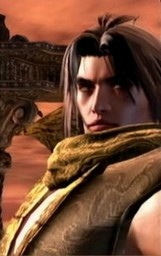
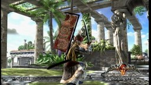
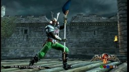
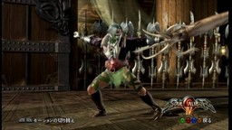

ソウルキャリバー４ キャラクリ 懐かしキャラ 編
[ミンキーモモ vs ジャック] [アンドロー梅田 vs GREY] [ラ・セーヌの星 vs ポプリ] [バロム・１ vs バロムワン] [零号機 vs トトロ] 先のバビル２世 編に続き、『ソウルキャリバー４』のキャラクタークリエイション(略してキャラクリ)で、アニメ・マンガ・特撮キャラを私なりに翻案してみた。今度は、姿がはっきりして写しやすいのが多いので、元の雰囲気がかなり出てるものもあると思う。 ■ミンキーモモ 【Momo】 [ミンキーモモ] [ミンキーモモ 顔] 『魔法のプリンセス ミンキーモモ』からモモ。英語名も Momo、ひょっとすると Jiji あたりのほうがいいのかもしれないが、これが日本人にとって Momo なのだということをインターナショナルに知らせたほうがいいという意図がある。 髪の色は実は赤が基本になっていて、それをアフロにしているからピンクに見えるという色使いにした。先のバビル２世 編のロプロスから様々な象徴を引き継がせて、「空モモ」というのを強調したかった。アニメでは髪を止めるのは青い星型の付いた黄色いリボンなのだけど、アフロをこの形にするには帽子型のを被らせるしかないので、青い羽根付きの黄色のベレー帽にした。 流派は、まじかる☆ステッキという「武器」が使えるエイミにした。ただし、武器としては DVD-BOX の絵にちなんで「ユニコーン」を持たせている。 ■バイオレンスジャック 【Akira】 [バイオレンスジャック]
『バイオレンスジャック』からジャック。日本名：ジャック、英語名：Akira にしている。バイオレンスジャックの「本名」Akira は、インターナショナルなオタクシーン(?)でも終末後の象徴となると考えたから。 永井豪キャラを何かキャラクリしたいと思ったが、デビルマンか、柳生十兵衛ちゃんか…で迷って、なぜかバイオレンスジャックにした。 流派はジャックナイフにギリギリ見えるものということでタキにしている。 ■アンドロー梅田 【Seneca】 [セネカ] [セネカ 顔] 『宇宙の騎士テッカマン』からアンドロー梅田。なぜか私はこのキャラをセネカの名で覚えていて、テッカマンの二次創作をすることばあれば、必ず登場させたいと想っていた。英語名はだから Seneca、ただし、12文字制限があるので SNC と入力している。(偶然、ヘビ系の名になった。) これは姿はかなり雰囲気通りになったが、声が思ったようなものにならなかった。『カウボーイビバップ』のスパイクが、アンドロー梅田の服を着ている絵を見たことがあるが、せめてあんな感じにできたらよかったのだけど。 流派はこんな感じの武器を投げてた印象があって、ティラにしている。 ■GREY 【Viper】
[GREY 顔] たがみよしひさ『GREY』。キャラクリの表ではちょうど超人ロックの下になり、たがみよしひさ氏の絵の印象から、女性キャラ化して作って見た。機械化を受け容れ、身体さえいろいろ捨てていくという感じを出したかった。その結果、『ストリートファイター IV』で私がよく使う C. Viper のイメージと重なってしまったので、英語名を Viper にした。ただ、後述の零号機との関係で、「二号機」的な位置でもある。 『GREY』は、パソコンの全盛期をむかえはじめるころ、矢野 健太郎『ネットワーク戦士』と並び、コンピュータ化の問題意識を私に強く印象づけることになった作品である。 流派は武器をいろいろ複数持ってるという印象から、吉光にしている。武器を持ったポーズは、私には、『グレンラガン』のヨーコも思い出させる。 ■ラ・セーヌの星 【Simone】 [ラ・セーヌの星] [ラ・セーヌの星 顔] 『ラ・セーヌの星』は何度も再放送されているのを見た記憶がある。英語名は正体であるシモーヌ(Simone)にしている。(フランスでの放送ではマチルダだったようだけど。)ただ、これも 12 文字制限のため、SMN と記載した。すると、この「イニシャル」は『セーラームーン』に偶然近いが、日本のそういった「美少女戦士」の元型が、このキャラだろう。 簡単な衣装なのだが、ベレー帽やマントを正しく反映させるのは難しく、ベレー帽はむしろマスクと合わせて三色旗ふうになるようにし、マントはひるがえる赤を重視した。 流派はエイミの兄、ラファエルにしている。 ■ポプリ 【Kaori】 [ポプリ] [ポプリ 顔] 『ふしぎ魔法 ファンファンファーマシィー』よりポプリちゃん。もちろん、ミンキーモモと同じく、キャラクリではアニメの衣装のまま少し大人になった感じにしている。英語名はポプリちゃんの本名：西野かおり から Kaori にした。 しましまふくを着せて、DLC のハロウィン用のかっこうをさせて色を白、ピンク、エンジの三色にし、足は猫足の靴で決まり。 傘を持たせねばなるまいということで流派を雪華にしたが、ぽぷりちゃんが悪い言葉を覚えたみたいで、きっとお父さん悲しんでるよ！ ■バロム・１ 【VRM-1】
[バロム・１ 顔] 『超人バロム・１』。英語名は VRM-1 にしたが、普通は V でなく B を使うようだ。ただ、解説本『バロム・1／クロスファイル』によると、名前は「ゴロ・印象」でできてるらしいので、これでもいいのかもしれない。 兜は、炎鬼を使おうかと思ったのだが、口の形がどうも違い、日本人なら元型はこっちでしょう…ということで、龍之立兜を使った。ところで先の解説本によると、アニメ版もあったようだが、その印象があったのか、中の人は、人外な緑色の肌にしてしまった。 流派は、ボップのようなものはないので、ヒーローが持ちそうなものを探して、フレスベルグがそれらしかったので、ソン・ミナにした。 ■バロムワン 【VRM-2】
[バロムワン 顔] 上のバロム・１に納得ができなかったことと、二人で一人のヒーローになるという設定を活かしたかったので、バロム・１をもう一体作ることにした。今度は、さいとうたかお の原作のほうを意識して、むさい男のイメージにしてみた。 名前は、語呂ということで本当は、馬郎武王(or 武漢)で、バロ・ムワンなのだろうと推測し、バロムワン。英語名は、VRM-2 だが、-2 をダブルと読めば、そんな感じかなと思った。 さいとうたかお といえばスパイマンガなわけだが、そういうところのワイルドさというか「適当さ」を出そうとして、流派をナイトメアにし、大王イカを武器として持たせた。ちなみに、バロム・１の怪人「〜ルゲ」は、スパイ・ゾルゲから当時の子供達が受けた残忍な印象から来ていると私は考えている。 ■零号機 【Rei】 [零号機] [零号機 顔] さて、そういえば男性キャラの女性キャラ化はしたが、女性キャラの男性キャラ化はしてないなぁ…と考えて、誰を作ろうかと迷ったところ、ちょうど、キャラクリ表で、初号機、GREY と作った下に来たので、「レイ」を作って見てはどうかと思い立った。 で、とりあえず水色髪・赤目にして、できる限り男性キャラを女性キャラに見せようといろいろいじっているうちに、こうなった。ああ、これはレイそのものというより、『新世紀エヴァンゲリオン』の零号機だな…と感じたので、「零号機」を名にし、英語名を Rei にした。 流派は、男性キャラに女性流派をやらせるのはすでにやっているので、男性か女性かが微妙な感じになるようにしようということで、アイヴィーにした。ちなみにアイヴィーは IVY なので、EVE、エヴァをもじったようになり、ちょうど良いとも考えた。 ■トトロ 【Totoro】 [トトロ] [トトロ 顔] 『となりのトトロ』よりトトロ、英語名もそのまま Totoro。でも、トトロの元はなんなのだろう？ダイダラボッチ？まさか論理学用語のトートロージーから？Wikipedia には「所沢のとなりのお化け」から来ていると書いてるけど…。 トトロの太った感じを女性で出すか、男性で出すか迷ったが、「原始的な優しさ」の象徴もこめたいということで女性にした。トトロの色はほぼ二色だが、大トトロの中に中トトロの色も取り入れてアクセントにした。なお、甲冑が脱げたときも、トトロっぽく見えるよう、肌の色を褐色にした上で、下着(女忍の<ruby><rb>穿</rb><rt>は</rt></ruby>き布)の色をそれより濃い褐色にしている。 流派はユンスン、武器はモロコシ。私が持ってるフィギュアでメイがトウモロコシを持っていたから。勝ちポーズの寝そべりが、トトロらしくて気に入っている。 ■備考 なお、録画環境は、Xbox 360 をキャプチャ ID-DATA GV-MVP/RX2 にコンポジット入力でつないで PC に録画している。入力遅延はあるが、キャラクリは動かさなくて良いので、これで用は足りる。あと静止画をワイドスクリーンの比率に戻すのに、GIMP を使って、720x480 の画像を 854x480 に変換した。 更新：2010-11-01 初公開：2010年11月01日 01:07:28 最新版：2010年11月01日 02:02:59
Trackbacks (3 件)
Trackbacks: 《再び番組降板！宮崎宣子アナの放送事故動画！》 from 再び番組降板！宮崎宣子アナの放送事故動画！ 「Oha!4 NEWS LIVE」（おはよん）を降板した日本テレビの宮崎宣子アナ放送事故を限定公開！！ 受信： 2010-11-01 03:39:44 (JST) 《ソウルキャリバー４ カスタムキャラ６ アニメ編４》 from ぶるのば 久しぶりにソウルキャリバー４のカスタムキャラです！と、いっても前のブログにＵＰし 受信： 2010-11-04 23:35:23 (JST) 《ソウルキャリバー４ キャラクリ 懐かしキャラ 編 その２》 from JRF の私見：雑記 先のバビル２世 編、懐かしキャラ 編 その１に続き、『ソウルキャリバー４』のキャラクタークリエイション(略してキャラクリ)で、アニメ・マンガ・特撮キャラを私なりに翻案してみた。ブログ等のアヴァター作成と同じくキャラクリには当然の制限があるが、その制限を超えるために独持解釈を加える必要があるのが楽しい。 ゲームでは、別に、同じキャラ流派のものが一人しか作れないという制限はないのだが、なんとなく私は同... 受信： 2010-11-05 04:26:22 (JST) Comments: [E:penguin]こんにちわ。 色々なキャラ作られてますね、 まさかのバロム１までいるとは！ モモのあの髪型は表現するのが難しいですよね・・・ でも帽子でってそういう考えもありですね。 うちもラ・セーヌの星は作りましたよ。 作る人が変われば、 同じものでもちょっと違ったりするのが面白いですね～。 そのうちにうちの方でも、前に作ったキャラでもＵＰしようと思ってます。 もう削除しているキャラもいるので、撮った写真を探さないと・・・ ではでは。 投稿: きろん | 2010-11-01 22:45:03 (JST) [E:happy01] ラ・セーヌの星は DVD とか出てないらしくて、VOD もちょっと見あたりません。残念です。 きろん様の twitpic を少し見ました。カーヴィ…爆笑しました。(^^) コメントありがとうございました。 投稿: JRF | 2010-11-01 23:12:29 (JST) [E:snow] 2012年2月にソウルキャリバー５が発売され、この記事に訪れる人も増えています。以前より「キャラクリ レシピ」で検索してくる方もいたので、SC5 発売記念ということで「レシピ」、つまり、キャラクタークリエーションのパラメータ画面も、公開することにしました。 こちらになります→ JRF_SC4_20120208.zip なお、ソウルキャリバー４はバンダイナムコゲームズ(NBGI)の2008年発売の著作物です。私自身は「レシピ」を同人で売れたりしたらいいのになぁ…即売会とかのお祭りにゲーム機とディスプレイを持ちこんで遊べないかなぁ…とか夢想してたのですが、まぁ、需要もそれほどないようですし、とりあえず公開したほうが愛着を持ってもらえるかと考え、無料で公開することにしました。ネットで公開した以上、NBGI がどういうかはわかりませんが、基本的に私としては自由に使っていただいてかまいません。 とはいえ、同人活動への色気は残しておきたいので、ダウンロード数がカウントできる SugarSync に置いています。そこに別サイトからリンクするのはいつでもこちらがリンクを切れるのでいいのですが、別サイトにアーカイブを置いての配布は、私か NBGI がいいと言わない限りやめていただくようお願いします。(私の公開自体が同人誌な勝手な公開ですので、NBGI の明示の許諾さえあれば、私は文句をいいません。) (記事ではなくコメントで書いたのは、記事のあとに PC が変わってるので、私の記事投稿システムだと更新に不安があったからです。orz) 投稿: JRF | 2012-02-08 20:59:31 (JST) Links: バビル２世 編: http://jrf.cocolog-nifty.com/column/2010/10/post-1.html ソウルキャリバー４: http://www.soularchive.jp/SC4/ 魔法のプリンセス ミンキーモモ: http://www.minkymomo.jp/ バイオレンスジャック: http://www.amazon.co.jp/dp/412203129X 宇宙の騎士テッカマン: http://www.tatsunoko.co.jp/works/archive/tekka.html カウボーイビバップ: http://www.b-ch.com/ttl/index.php?ttl_c=130 スパイクが、アンドロー梅田の服を着ている絵: http://www11.big.or.jp/~denden/osiire/andorospike.html GREY: http://www.amazon.co.jp/gp/product/4821184699 ストリートファイター IV: http://www.capcom.co.jp/sf4/IV/ ネットワーク戦士: http://www.amazon.co.jp/dp/4051057828 グレンラガン: http://www.gurren-lagann.net/tv/index.html ラ・セーヌの星: http://www.amazon.co.jp/dp/B00005H2HF セーラームーン: http://sailormoon.channel.or.jp/ ふしぎ魔法 ファンファンファーマシィー: http://www.amazon.co.jp/dp/B00009QX5T 超人バロム・１: http://www.amazon.co.jp/dp/B000228U4Y バロム・1／クロスファイル: http://www.amazon.co.jp/dp/4845824922 新世紀エヴァンゲリオン: http://www.gainax.co.jp/anime/eva/index.html となりのトトロ: http://www.amazon.co.jp/dp/B00005NJLP Wikipedia: http://ja.wikipedia.org/wiki/%E3%81%A8%E3%81%AA%E3%82%8A%E3%81%AE%E3%83%88%E3%83%88%E3%83%AD GIMP: http://www.gimp.org/ きろん: http://bluenova.cocolog-nifty.com/blog/ JRF_SC4_20120208.zip: https://www.sugarsync.com/pf/D252372_79_7677794300
後方参照 (7 件)
- URL参照 グレーバー＆ウェングロウ『万物の黎明』を読んだ。悪く言えば、党派性のある衒学的な… 2024年05月27日
- URL参照 セネカ『怒りについて… 2022年10月01日
- URL参照 Virtua Fighter 5 FS コスプレ：リリアン女学園 編 その２ 2012年12月21日 21:09:38
- URL参照 Virtua Fighter 5 FS コスプレ：イロモノ 編 2012年12月21日 21:13:20
- URL参照 Virtua Fighter 5 FS コスプレ：懐かしのスター 編 2012年12月21日 21:17:33
- URL参照 前期の翌日(2011-01-01)から昨日(2011-03-31)まで 90 日間のアクセス解析・近況など 2011年04月01日 00:45:38
- URL参照 アルバン・ベルク四重奏団『ドビュッシー＆ラヴェル：弦楽四重奏曲… 2010年11月06日